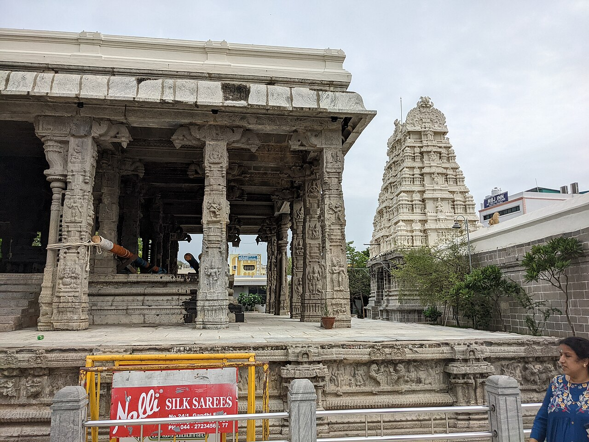

Wikimedia Commons · CC BY-SA 4.0 ⇗
Sthala Puranam
Kamakshi Amman is worshipped at Kanchipuram as the supreme Mother of the universe, seated in the Kamakoti Peetha tradition. The temple is intimately connected with Shaktism and with the Sri Vidya upasana begun by Adi Shankara, who is believed to have established the Sri Chakra here.
Explanation
The tradition associates the seat of the Goddess with a portion of Sati's body (variously the abdomen or the eye). The Goddess is Kamakshi — she who confers desire that is born of divine love and command. Around this shrine grew the Kamakoti Matha tradition, a seat of Advaita, and the town of Kanchipuram became one of the most important temple cities of South India, with its own suite of zāra dhāma and Pancha Bhoota shrines. The inner sanctum houses the Goddess in a standing posture holding a sugarcané bow and flower arrows.
Why the temple is revered
Kanchipuram is sacred to both Shaiva and Shakta traditions, and Kamakshi here is revered as the compassionate Mother who grants moksha. The site is counted among the most important Shakti Peethas, and its Sri Vidya tradition has made it a living school of Devi worship that has continued for more than a millennium.
🕉 Story
Kamakshi is revered as the supreme Divine Mother at Kanchipuram. The temple is deeply connected with the Sri Vidya tradition and the sacred heritage of Kanchi.
✨ Significance
Kamakshi is one of the most important forms of Devi worship in South India, and Kanchipuram is one of India's major temple cities.